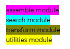
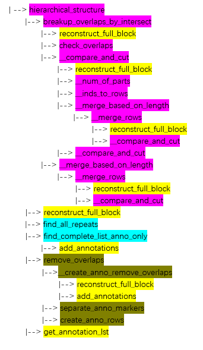

The Assemble Module¶
The assemble module of the mirah package finds and forms the essential structure components. These components are the smallest building blocks that form the basis for every repeat in the song. The functions in this module ensure each time step of a song is contained in at most one of the song’s essential structure component by making none of the repeats overlap in time. When repeats do overlap, these repeats undergo a process where they are divided until there are only non-overlapping
pieces left over. The following functions are exported from the assemble modeule:
breakup_overlaps_by_intersect: Extracts repeats in input_pattern_obj that has the starting indices of the repeats, into the essential structure componets using bw_vec, that has the lengths of each repeat.
check_overlaps: Compares every pair of groups, determining if there are any repeats in any pairs of the groups that overlap.
hierarchical_structure: Distills the repeats encoded in matrix_no_overlaps (and key_no_overlaps) to the essential structure components and then builds the hierarchical representation. Also optionally outputs visualizations of the hierarchical representations.
This module uses find_all_repeats from the `search <./search_vignette.ipynb>`__ module and reconstruct_full_block from the `utilities <./utilities_vignette.ipynb>`__ module.
For more in depth information on the function calls, an example function pipeline is shown below. Functions from the current module are shown in purple.
 
Import Modules¶
[1]:
# NumPy is used for mathematical calculations
import numpy as np
# Import other modules
from inspect import signature
# Import assemble
import sys, os
current_dir = os.path.dirname(os.path.realpath('__file__'))
relative_path = os.path.join(current_dir, '..')
sys.path.append(relative_path)
from mirah.assemble import *
breakup_overlaps_by_intersect¶
The purpose of this function is to create the essential structure components matrix. The essential structure components contain the smallest building blocks that form every repeat in the song. This matrix is created using the input_pattern_object, that has the starting indices of the repeats and a vector, bw_vec, that has the lengths of each repeats.
The inputs for this function are: - input_pattern_obj (np.ndarray): A binary matrix with 1’s where repeats begin and 0’s otherwise - bw_vec (np.ndarray): Lengths of the repeats encoded in input_pattern_obj - thresh_bw (int): The smallest allowable repeat length
The outputs for this function are: - pattern_no_overlaps (np.ndarray): A binary matrix with 1’s where repeats of essential structure components begin - pattern_no_overlaps_key (np.ndarray): A vector containing the lengths of the repeats of essential structure components in pattern_no_overlaps
[2]:
input_pattern_obj = np.array([[1, 0, 0, 0, 0, 0, 0, 0, 1, 0, 0, 0, 0, 0, 0, 0, 1, 0, 0],
[0, 0, 0, 1, 0, 0, 0, 0, 0, 0, 0, 1, 0, 0, 0, 0, 0, 0, 0],
[1, 0, 0, 0, 0, 0, 0, 0, 1, 0, 0, 0, 0, 0, 0, 0, 0, 0, 0],
[0, 0, 0, 1, 0, 0, 0, 0, 0, 0, 0, 1, 0, 0, 0, 0, 0, 0, 0]])
bw_vec = np.array([[3],
[5],
[8],
[8]])
thresh_bw = 0
print("The input array is: \n", input_pattern_obj)
print("The lengths of the repeats in the input array is: \n", bw_vec)
print("The smallest allowable repeat length is: ", thresh_bw)
The input array is:
[[1 0 0 0 0 0 0 0 1 0 0 0 0 0 0 0 1 0 0]
[0 0 0 1 0 0 0 0 0 0 0 1 0 0 0 0 0 0 0]
[1 0 0 0 0 0 0 0 1 0 0 0 0 0 0 0 0 0 0]
[0 0 0 1 0 0 0 0 0 0 0 1 0 0 0 0 0 0 0]]
The lengths of the repeats in the input array is:
[[3]
[5]
[8]
[8]]
The smallest allowable repeat length is: 0
[3]:
output = breakup_overlaps_by_intersect(input_pattern_obj, bw_vec, thresh_bw)
print("The output array is: \n", output[0])
print("The lengths of the repeats in the output array is: \n", output[1])
The output array is:
[[1 0 0 0 0 0 0 0 1 0 0 0 0 0 0 0 1 0 0]
[0 0 0 1 0 0 0 0 0 0 0 1 0 0 0 0 0 0 0]]
The lengths of the repeats in the output array is:
[[3]
[5]]
check_overlaps¶
This function compares every pair of groups and checks for overlaps between those pairs. To check every pair of groups, the function creates compare_left and compare_right. compare_left repeats each row the number of rows times, and compare_right repeats the whole input the number of rows times times. By comparing each corresponding time step in compare_left and compare_right, it determines if there are any overlaps between groups.
The input for this function is:
input_mat (np.ndarray): An array waiting to be checked for overlaps
The output for this function is: - overlaps_yn (np.ndarray): A logical array where (i,j) = 1 if row i of input matrix and row j of input matrix overlap and (i,j) = 0 elsewhere
[4]:
input_mat = np.array([[0, 0, 0, 1, 1, 1, 1, 1, 1, 1, 1, 1, 1, 1, 1, 1, 1, 1, 1],
[1, 1, 1, 1, 1, 1, 1, 1, 1, 1, 1, 1, 1, 1, 1, 1, 0, 0, 0],
[0, 0, 0, 1, 1, 1, 1, 1, 0, 0, 0, 1, 1, 1, 1, 1, 0, 0, 0],
[1, 1, 1, 0, 0, 0, 0, 0, 1, 1, 1, 0, 0, 0, 0, 0, 1, 1, 1]])
print("The input array waiting to be checked for overlaps is: \n", input_mat)
The input array waiting to be checked for overlaps is:
[[0 0 0 1 1 1 1 1 1 1 1 1 1 1 1 1 1 1 1]
[1 1 1 1 1 1 1 1 1 1 1 1 1 1 1 1 0 0 0]
[0 0 0 1 1 1 1 1 0 0 0 1 1 1 1 1 0 0 0]
[1 1 1 0 0 0 0 0 1 1 1 0 0 0 0 0 1 1 1]]
[5]:
output = check_overlaps(input_mat)
print("The output logical array is: \n", output)
The output logical array is:
[[False True True True]
[False False True True]
[False False False False]
[False False False False]]
hierarchical_structure¶
This function distills the repeats encoded in matrix_no_overlaps (and key_no_overlaps), which are the outputs from the remove_overlaps function from the transform module, to the essential structure components and then builds the hierarchical representation. It optionally shows visualizations of the hierarchical structure via the vis argument.
The inputs for this function are:
matrix_no_overlaps (np.array[int]): A binary matrix with 1’s where repeats begin and 0’s otherwise
key_no_overlaps (np.array[int]): A vector containing the lengths of the repeats encoded in matrix_NO
sn (int): The song length, which is the number of audio shingles
vis (bool): shows visualizations if True (default = False)
The outputs for this function are:
full_visualization (np.array[int]): A binary matrix representation for full_matrix_NO with blocks of 1’s equal to the length’s prescribed in full_key
full_key (np.array[int]): A vector containing the lengths of the hierarchical structure encoded in full_matrix_NO
full_matrix_NO (np.array[int]): A binary matrix with 1’s where hierarchical structure begins and 0’s otherwise
full_anno_lst (np.array[int]): A vector containing the annotation markers of the hierarchical structure encoded in each row of full_matrix_NO
[6]:
matrix_no_overlaps = np.array([[0, 1, 0, 0, 0, 0, 0, 0, 0, 0, 0, 1, 0, 0, 0, 0, 0, 0, 0, 0]])
key_no_overlaps = np.array([2])
sn = 20
print("The matrix representation of the non-overlapping repeats is: \n", matrix_no_overlaps)
print("The lengths of the repeats in matrix_no_overlaps are: \n", key_no_overlaps)
print("The song length is: \n", sn)
The matrix representation of the non-overlapping repeats is:
[[0 1 0 0 0 0 0 0 0 0 0 1 0 0 0 0 0 0 0 0]]
The lengths of the repeats in matrix_no_overlaps are:
[2]
The song length is:
20
[7]:
output = hierarchical_structure(matrix_no_overlaps, key_no_overlaps, sn, vis=True)
full_visualization = output[0]
full_key = output[1]
full_matrix_no = output[2]
full_anno_lst = output[3]
print("The binary matrix representation for the full_matrix_no is: \n", full_visualization)
print("The vector containing the lengths of the hierarchical structure encoded in full_matrix_no is: \n", full_key)
print("The binary matrix with 1's where hierarchical structure begins and 0's otherwise is: \n", full_matrix_no)
print("The vector containing the annotation markers of the hierarchical structure encoded in each row \n of full_matrix_no is: \n", full_anno_lst)
The binary matrix representation for the full_matrix_no is:
[[0 1 1 0 0 0 0 0 0 0 0 1 1 0 0 0 0 0 0 0]]
The vector containing the lengths of the hierarchical structure encoded in full_matrix_no is:
[[2]]
The binary matrix with 1's where hierarchical structure begins and 0's otherwise is:
[[0 1 0 0 0 0 0 0 0 0 0 1 0 0 0 0 0 0 0 0]]
The vector containing the annotation markers of the hierarchical structure encoded in each row
of full_matrix_no is:
[1]